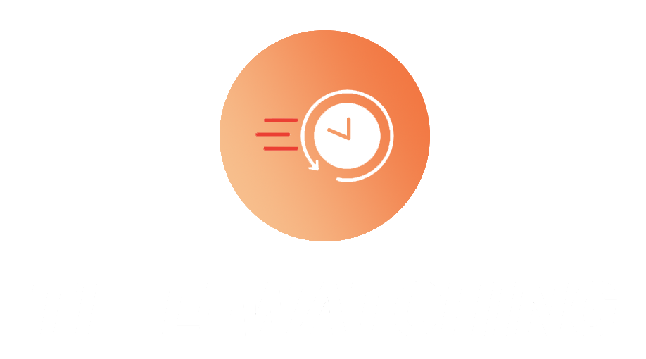

?
Tempo:
Voltar a tela anterior
Calcule quanto tempo aproximadamente você gastaria com uma determinada série
Desgin e código por
Maria Verônica
e
Sunimar
.
Acesse esse projeto no
GitHub
.
Como funiona: coloque o nome da série, número de temporadas, número de episódios, e duração aproximada de cada episódio